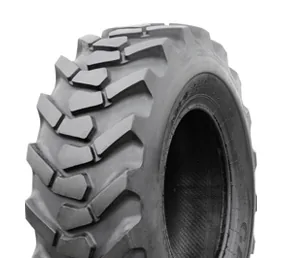
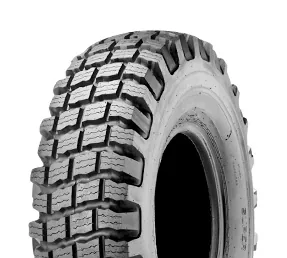
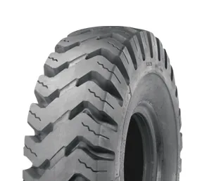
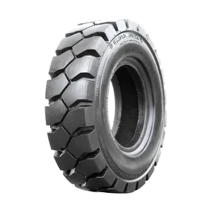
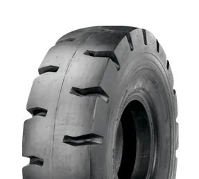

TLB & backhoe (R-4)
Industrial lug tread that grips on site and still drives well on tar between jobs.
Engineering tyres for construction, roads, quarries and warehouses — backhoe loaders, graders, wheel loaders, skid steers, telehandlers and forklifts.
Find your tyre
Tap your size to check stock and we’ll pre-fill the quote. Running a plant fleet? Add every machine in one request.
12.5 = width in inches · 80 = sidewall % · - = bias · 18 = rim in inches. A typical TLB front size.
28 = overall diameter in inches · 9 = width · 15 = rim — a common forklift size, also sold as 8.15-15.
What we supply

Industrial lug tread that grips on site and still drives well on tar between jobs.

Directional tread for graders: steering control and traction on gravel and haul roads.

Deep rock tread for wheel loaders in quarries, stockpiles and demolition.

Pneumatic forklift tyres for warehouses, yards and depots — ask us about solid options.

Heavy-duty industrial tyres for reach stackers, container handlers and heavy forklifts.
10-16.5 and 12-16.5 skid steer tyres and telehandler sizes for tight, busy sites.
Contractors & plant hire
One flat can stop a whole job. Send us your plant list — TLBs, graders, loaders and forklifts — and we’ll quote every tyre together.
Get a contractor quoteWhy contractors choose Proclassic
Fast quote
Send the size on the sidewall (e.g. 16.9-28 or 28x9-15), the machine and quantity. We check stock in Harare and Mutare and reply on WhatsApp with availability and today’s price.
Questions
Send a photo of the tyre sidewall and the machine on WhatsApp — we’ll match the size and tread.
Ask on WhatsAppMost TLBs such as the JCB 3CX and CAT 428 run 12.5/80-18 (or 10.5/80-18) on the front and 16.9-28 or 19.5L-24 on the rear. Check the size on your current tyres and send it to us to confirm stock.
Motor graders commonly use 14.00-24 (for example CAT 140 and 12 series graders) or 13.00-24 on smaller machines, usually with a G-2 directional tread. Radial 1400R24 is also available for some graders.
Yes. We supply pneumatic forklift tyres in common sizes such as 28x9-15 (8.15-15), 7.00-12, 6.50-10 and more for warehouses and yards. Ask us about solid tyre options for your forklift.
These are standard tread codes. R-4 is an industrial lug tread used on TLBs and loader tractors; G-2 is a grader traction tread; L-4 is a deep rock tread for loaders and dozers. Matching the tread to the work gives you more grip and longer tyre life.
Yes. We supply contractors, plant-hire companies, councils and quarries with tyres for their whole fleet. Choose “10+ (fleet / bulk)” on the quote form.
Yes. We deliver nationwide across Zimbabwe from our Harare and Mutare branches.
Prices depend on size, ply rating and availability, so we confirm the exact price when you ask. Send your size on WhatsApp and we reply with availability and today’s price.